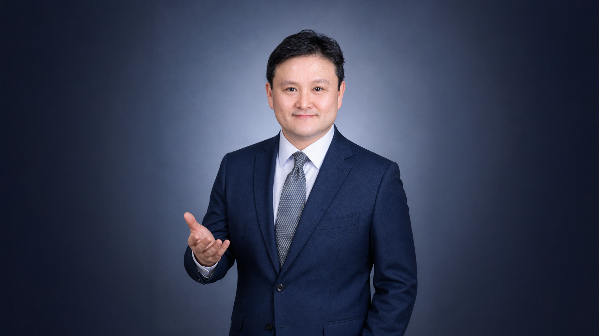

대표 저서 · 2026.07.03
인간지능-AI의 협업과
소비린 AI
커뮤니케이션북스

Educator · Marketer · Researcher
AI·바이브코딩 실습형 교육과 마케팅,
연구·콘텐츠를 연결합니다.
Now Open
01 / About
AI를 이해하는 데서 그치지 않고 직접 만들고 활용하는 교육을 지향합니다. 실습형 교육, 마케팅 현장, 학술 연구와 콘텐츠 사이를 오가며 새로운 기술이 사람과 조직에 의미 있게 쓰이는 방법을 탐구합니다.
02 / Experience & Education
연성대학교 경영학과 겸임교수
중앙N남부법률사무소 마케팅 자문
네오픽스코리아 대표
Beta Gamma Sigma
세종대학교 경영학 박사
한국방송통신대학교 법학 학사
세종대학교 경영학 석사
아주대학교 경영학 학사
03 / Research & Publications
대표 저서 · 2026.07.03
커뮤니케이션북스
인공지능 윤리성이 소비자 인식과 사용의도에 미치는 효과: TRUST 윤리 프레임워크의 제안과 실증
논문AI 창작물의 오리지널리티 인식과 소비자 반응: 예술성과 상업성 맥락의 조절효과
논문AI 창작물의 오리지널리티
단행본데이터 주권 인식이 소비린 AI 이용의향에 미치는 영향: TAM 기반 접근
논문무인매장의 CCTV 감시 윤리성이 소비자 인식에 미치는 영향에 대한 탐색적 연구
논문04 / Selected Projects